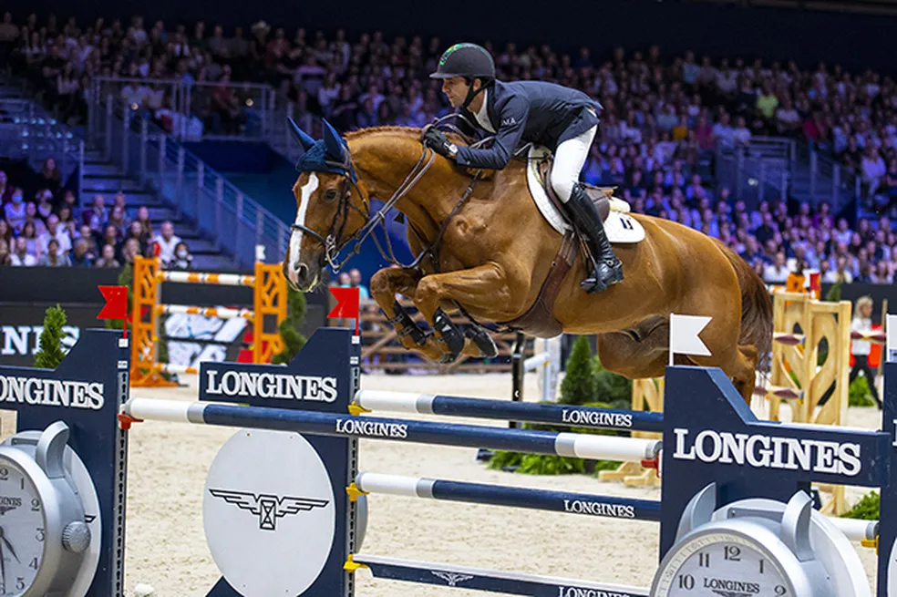
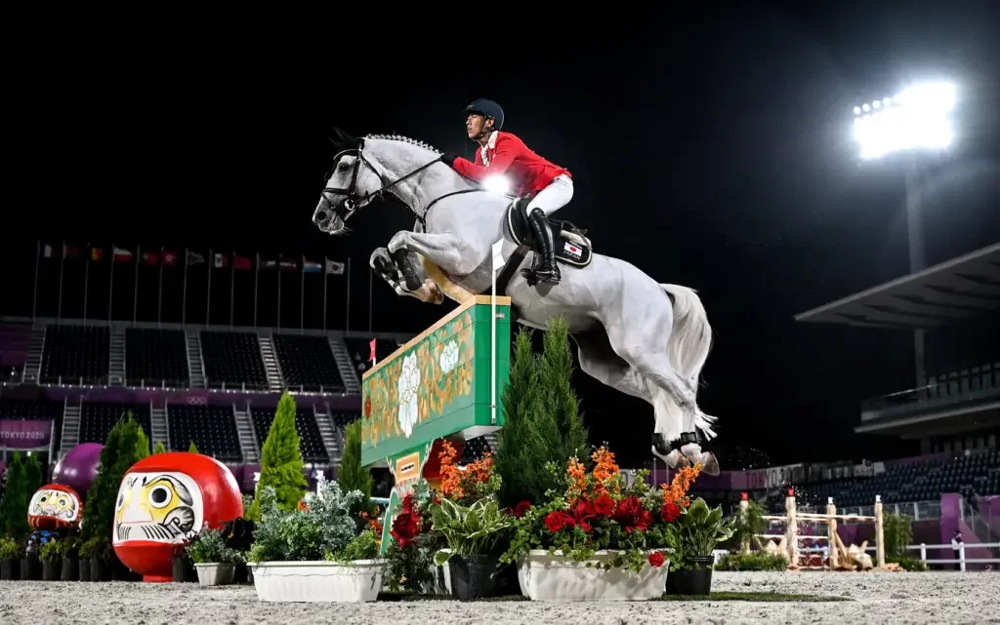
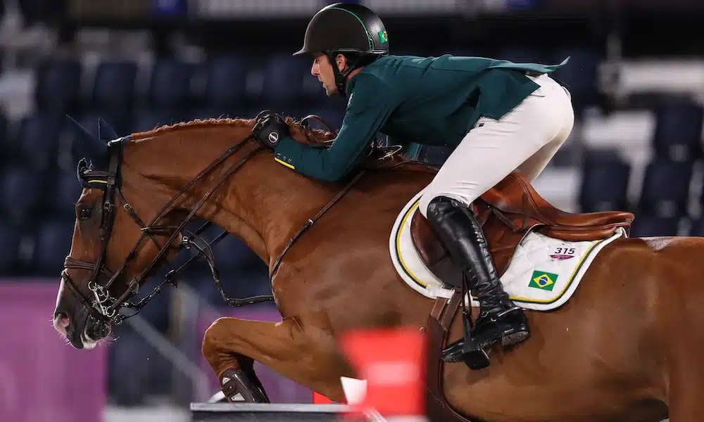
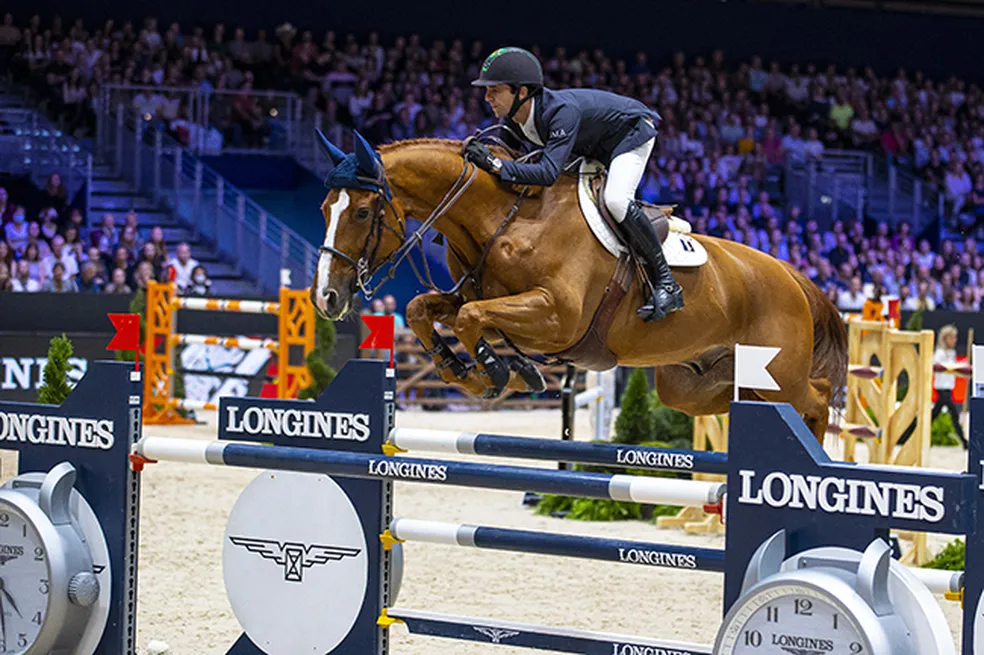
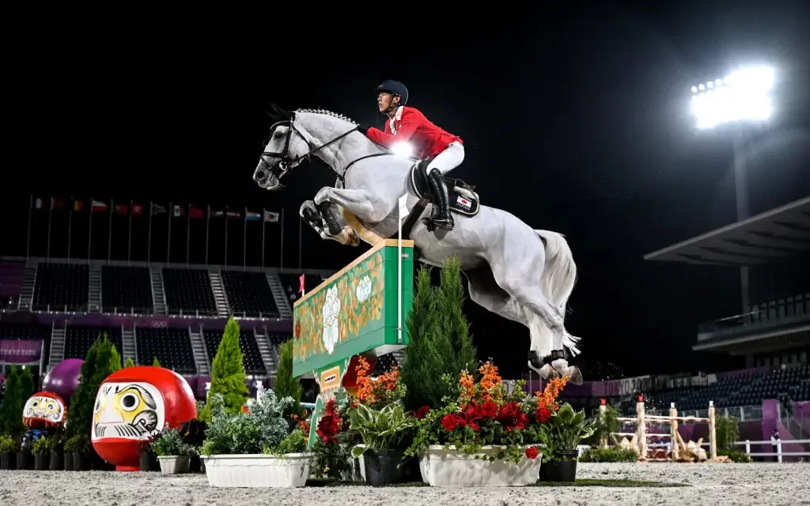
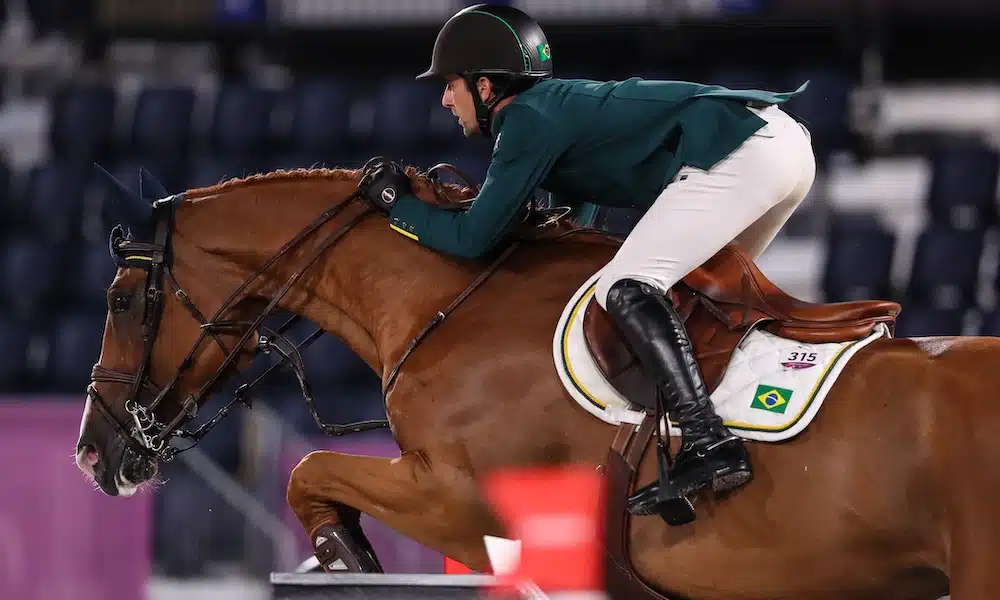

- História do hipismo
O hipismo é um esporte em que os(as) atletas disputam provas demonstrativas montando cavalos. Esse esporte teve origem na segunda metade do século XIX, decorrente da prática de passeios e corridas a cavalo, bem como da caça às raposas, hábitos comuns aos ingleses. Assim, os ingleses passaram a reproduzir esses hábitos campestres em locais menores e fechados, criando, então, obstáculos que substituíssem aqueles encontrados na natureza.Desse modo, a prática foi sendo aprimorada e esportivizada. Com isso, foram atribuídas a ela regras específicas e categorias para a disputa das provas, as quais se apresentam configuradas por idade e grau de preparo técnico. Posteriormente, o esporte passou a compor o quadro de modalidades disputadas nos Jogos Olímpicos da Era Moderna já em sua primeira edição, em Atenas 1896.
- Hipismo no Brasil
O torneio de Cavalaria de 1641 foi a primeira competição de hipismo realizada no Brasil, na então chamada cidade de Maurícia (atual Recife). A competição hípica fazia parte da proposta de reformulação urbana e cultural do príncipe holandês Maurício de Nassau, recém-chegado ao Brasil. O torneio foi disputado pelo grupo de cavaleiros holandeses, alemães, franceses e ingleses contra o grupo de brasileiros e portugueses, sendo estes o grupo vitorioso.
- Modalidades e regras
Atualmente, o hipismo apresenta três modalidades ou disciplinas olímpicas: Salto, Adestramento e Concurso Completo de Equitação (CCE). Além disso, o esporte apresenta também a disciplina de Adestramento Paraequestre, disputada nos Jogos Paralímpicos.
- Curiosidades
Os atletas e as atletas de hipismo recebem o nome de cavaleiros e amazonas, respectivamente, para todas as modalidades ou disciplinas do esporte.
O cavaleiro mais velho a disputar a modalidade até os dias atuais é o general austríaco Arthur Von Pongracz. A competição em questão foi na modalidade de Adestramento dos Jogos Olímpicos de Berlim 1936.
A amazona britânica Lorna Johnstone é a mulher mais velha que já disputou o hipismo nas Olímpiadas. Esse marco se deu na modalidade de Adestramento da edição dos Jogos de Munique 1972, ocasião em que ela tinha 70 anos.
As mulheres iniciaram suas competições nesse esporte na edição das Olimpíadas de Helsinque 1952.
O hipismo é a única modalidade de esporte olímpico em que as mulheres disputam em igualdade de condições com os homens, tanto nas provas individuais quanto nas provas de equipes mistas.
A primeira disputa de Adestramento Paraequestre aconteceu nos Jogos Paralímpicos de Nova Iorque 1984.


 




